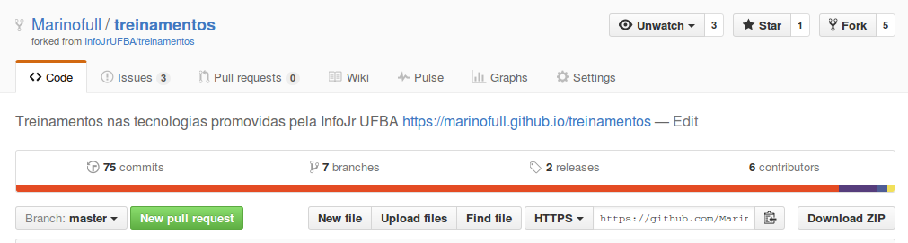
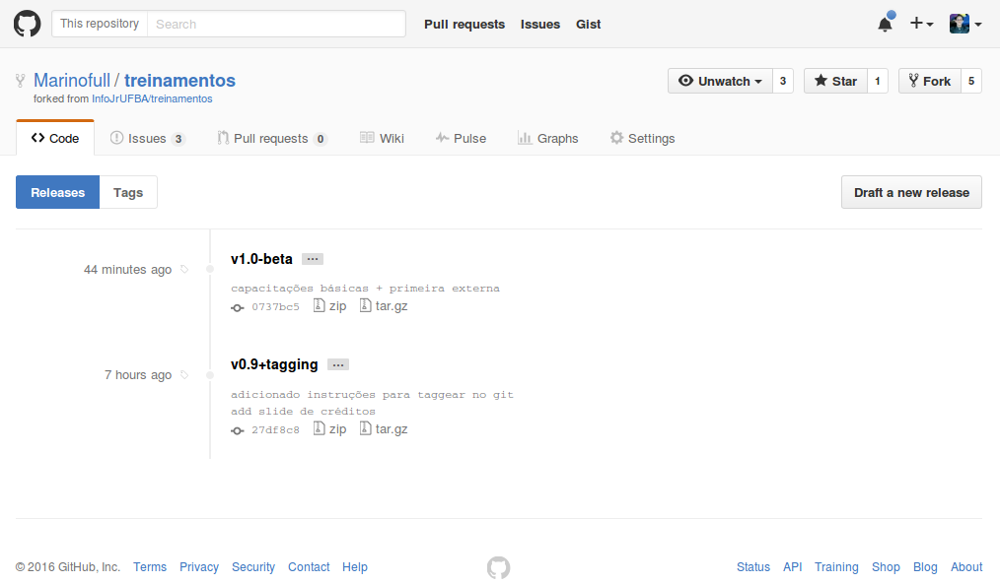
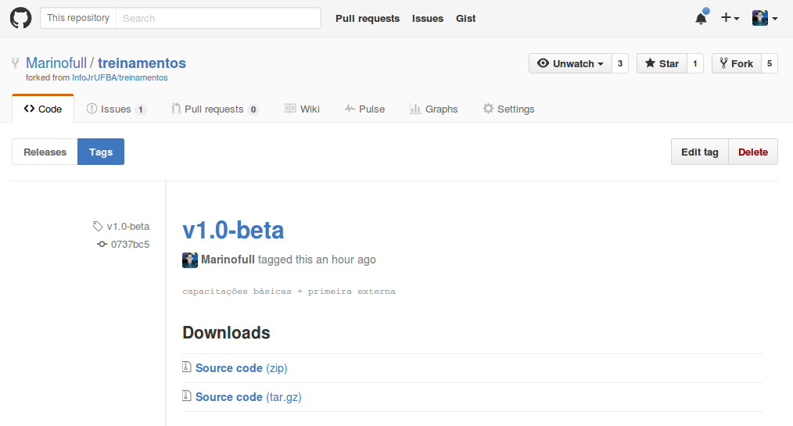
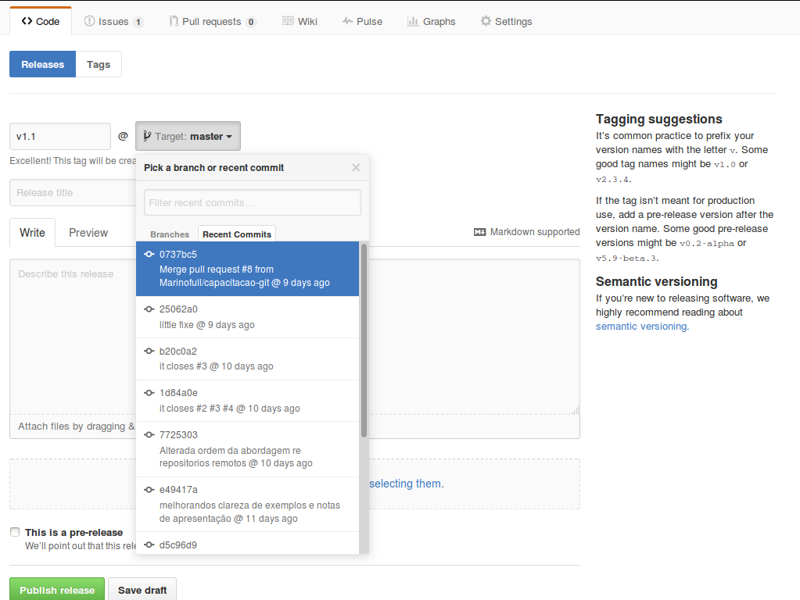
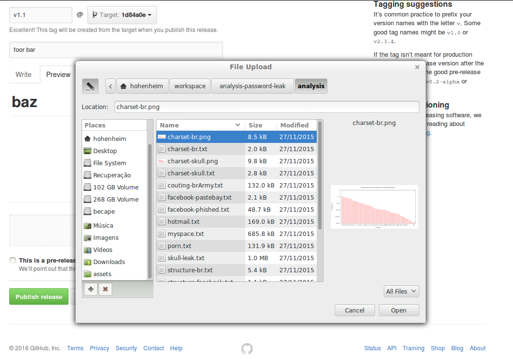
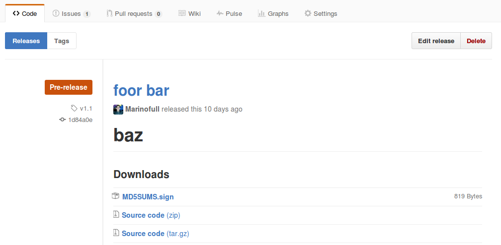

Todo mundo já fez alguma vez isso ou algo próximo
Só que próximo não é suficiente
Sem uso de especificação formal alguma, os números serão inúteis
Se uma aplicação X usa uma lib na versão 2.1.0 ...
Saberemos que ela funcionará com essa lib numa versão >= 2.1.0 porém < 3.0.0
Um projeto nem sempre chegará a sua versão 1.0.0
Definição formal
vX.Y.Z-label
vMajor.Minor.Patch-label
Patch: Otimização e correções;
Minor: Novas features, compatibilidade da API anterior;
Major: Novo release, imcompatibilidade da API anterior;
Major == 0 significa não oficial (não necessáriamente)
label
pre-release
build
Ambos
Versionamento no Git com Tags
A função tag sua real habilidade;
Asociar tags ao hash do commit alvo de versão;
Troca de versão ultra rápida.
Tags leves e tags anotadas
###Tags com o Git
Tags Anotadas
```
$ git tag -a vX.Y.Z -m "message"
```
Tags Leves
```
$ git tag vX.Y.Z
```
Listando Tags
```
$ git tag
v0.8
v1.0-rc
v1.1
v2.0
v2.1
v2.2
```
```
$ git tag -l 'v2.*'
v2.0
v2.1
v2.2
```
Taggeando commits do passado:
```
$ git lg
* 84f05a6 - Tue, 5 Apr 2016 17:44:05 -0300 (5 days ago) (HEAD, tagging)
| revisando o E-BNF - Marinofull
* d37ca0b - Fri, 11 Mar 2016 10:11:27 -0300 (4 weeks ago) (origin/tagging)
| changes imgs - Marinofull
| * 0737bc5 - Fri, 1 Apr 2016 20:23:03 -0300 (9 days ago) (origin/master, origin/HEAD, master)
| |\ Merge pull request #8 from Marinofull/capacitacao-git - Marino Hohenheim
| | | * e064d6e - Fri, 1 Apr 2016 13:49:30 -0300 (9 days ago) (origin/gh-pages, gh-pages)
| | | |\ Merge branch 'capacitacao-git' into gh-pages - Marinofull
| | | |/
| | |/|
| | * | 25062a0 - Fri, 1 Apr 2016 13:47:56 -0300 (9 days ago) (origin/capacitacao-git, capacitacao-git)
| | | | little fixe - Marinofull
| | * | b20c0a2 - Fri, 1 Apr 2016 00:30:32 -0300 (10 days ago)
| | | | it closes #3 resolve #4 - Marinofull
:
```
```
$ git tag -a v1.1-alpha 84f05a6
```
Lendo dados de uma tag
```haskell
$ git show v1.1-alpha
tag v1.1-alpha
Tagger: Marinofull
Date: Sun Apr 10 16:41:53 2016 -0300
Finalizando capacitação de tags
commit 27df8c88d2220377cf52d2bc955a69f5e3dc1971
Author: Marinofull
Date: Sun Apr 10 16:37:41 2016 -0300
adicionado instruções para taggear no git
add slide de créditos
```
Enviando para um repositório remoto:
```
$ git push origin v1.0
$ git push origin v2.3.1-beta
```
ou simplismente:
```
$ git push origin --tags
```
Liberando releases no GitHub

###Dúvidas?
Este é o momento
###Feedbacks:
```
mailto: marino@dcc.ufba.br
mailto: intmarinoreturn0@gmail.com
mailto: marino@infojr.com.br
```